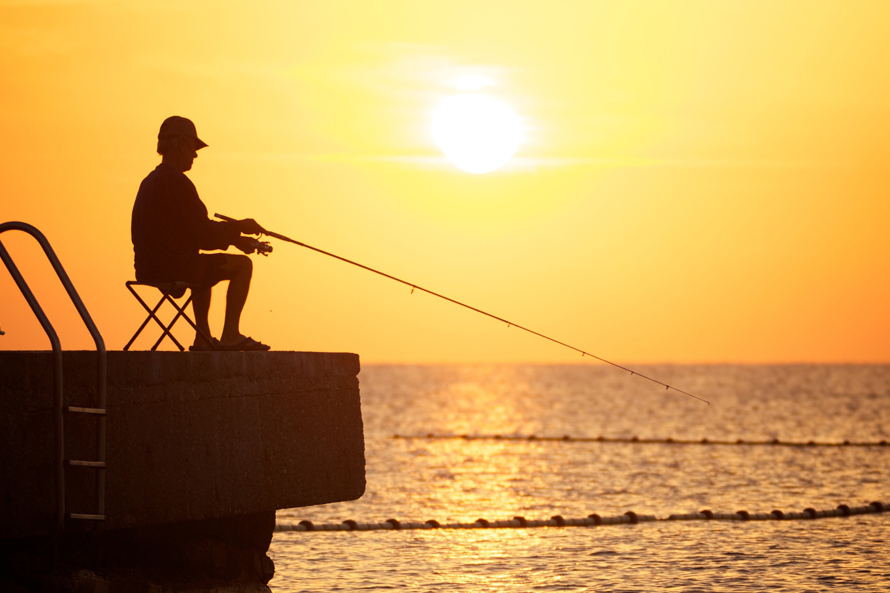

Рыбалка

Рыба́лка — занятие выуживанием рыбы из водоёма с целью прокорма или просто для развлечения.
Рыбалка делится на любительскую и спортивную. В отличие от рыболовства, рыбалка — развлечение, досуг, вид отдыха, туризма и спорта.
О происхождении слова
В старину, а в некоторых говорах (и в украинском языке) и сейчас, слово «рыбалка» означало не рыбную ловлю, а рыболова, рыбака.
В Ярославской области исстари рыбалкой именуют чайку. Например, в стихотворении Некрасова «На Волге» есть строки:
« Уж скоро полдень. Жар такой,
Что на песке горят следы,
Рыбалки дремлют над водой,
Усевшись в плотные ряды… »
Виды рыбалки
Различают рыбалку:
по времени года: летняя, зимняя;
по месту: морская, пресноводная (речная, озёрная);
с лодки, со льда, на подводной охоте, с берега, с заходом в воду (на горных реках);
по используемым снастям: поплавочная (в том числе сбирулино), донная (в том числе фидерная, методная ловля), спиннинг, нахлыст, жерлица, острога (запрещено законодательством), лук (стрельба по рыбе из лука), чекмарь;
с изъятием рыбы из среды обитания или с возвратом в водоём по принципу «поймал-отпустил»;
по объекту лова: карась, карп, язь, сазан, судак, щука, ленок, сиговые, лещ, пескарь, уклейка, сибирский таймень, байкальский омуль, лососёвые, сом, хариус, то есть хищные, полухищные, травоядные (не хищные) виды и т. д.
Последнее различие из указанных является основным: ловля мирной (белой) рыбы или ловля хищной рыбы.
Для хранения и переноса выловленной рыбы используют кукан, садки. Для удобного вываживания рыбы из воды применяют подсачек.
Преимущества и недостатки принципа «поймал-отпустил»
К преимуществам отпускания пойманной рыбы можно отнести, то что часть отпущенной рыбы выживает, уменьшая депопуляцию. Это имеет место лишь при соблюдении норм вылова, в то время как неограниченный нормативами лов с последующим отпусканием может нанести популяции больший ущерб, в сравнении с изъятием из водоёма рассчитанной ихтиологами допустимой нормы вылова. К недостаткам неограниченного лова по принципу «поймал-отпусти» можно отнести различные виды травмирования особей в процессе лова и содержании в садке: обморожения при ловле в мороз со льда, повреждения ротовой полости и жабр, чешуи и плавников, внутренних органов вследствие баротравмы, тепловые ожоги хладнокровных при неопсредственом контакте с руками рыболова, которые в зависимости от вида могут привести к болезни или гибели особи. В некоторых странах и регионах (Германия[5], Швейцария, Сахалин[ в РФ и т. д.) по ихтиологическим и морально-этическим причинам использование принципа «поймал-отпустил» находится под законодательным запретом.
Виды ловли хищной рыбы
1.Спиннинг — ловля хищной рыбы на движущуюся натуральную (снасточка) или искусственную приманку (блёсны, воблеры, джиговые приманки). В качестве рыболовной снасти используется специальное спиннинговое удилище с большим количеством пропускных колец для выполнения дальнего заброса приманки и спиннинговая катушка, мультипликаторная или безынерционная.
2.Троллинг — проводка приманки за движущейся лодкой. В качестве снасти используется мощное спиннинговое удилище, чаще с мультипликаторной, реже — с безинерционной катушкой. Дорожка — подвид троллинга, когда лодка движется не мотором, а вёслами.
3.Джиг — ступенчатая проводка приманки спиннингом. Обычно используется для ловли рыбы на глубинах и бровках. Как правило, это ловля окуня, судака и щуки. Разновидность спиннинговой ловли.
4.Микроджиг — ступенчатая проводка приманки маленького веса (1—5 г) по небольшим глубинам.
5.Твичинг — ловля с помощью спиннинга, приманка ведётся рывками. В основном используются такие приманки как воблеры, типа минноу.
5.Джеркинг — то же что и твичинг, только используются тяжёлые приманки.
6.Ловля в отвес — ловля рыбы с лодки или в зимнее время со льда, используя вертикальное блеснение или на мормышку.
7.Сбирулино — ловля на лёгкую, невесомую приманку с использованием обычного спиннингового удилища и специального утяжеляющего поплавка или грузила.
8.Нудлинг — метод ловли сома голыми руками.
9.Водяной змей, он же кораблик — ловля поверхностных видов рыб на малька и насекомых с помощью плавучего кораблика.
10.Жерлица — насторожённая пассивная самоловная живцовая стационарная снасть. Различают зимнюю и летнюю жерлицы.
11.Кружок рыболовный — насторожённая активная живцовая плавучая снасть.
12.Рыболовная резинка — донная удочка с резиновым амортизатором.
13.Балансир — горизонтальная блесна, применяемая в основном для зимней ловли хищника.
14.На́хлыст — это вид ловли рыбы, при котором, с помощью специализированного удилища и шнура приманка (мушка) имитирует попавшее в воду насекомое.
Виды ловли мирной рыбы:
1.Фидер — (англ. feeder) — английская рыболовная донная снасть, а также способ ловли рыбы этой снастью. Особенность данного способа ловли заключается в использовании специальных удилищ с квивертипами, которые выступают сигнализаторами поклевки. Фидер — снасть с кормушкой (англ. «to feed» — «кормить»), рассчитанная на ловлю со дна с постоянным прикармливанием места ловли.
2.Донка — рыболовная снасть, предназначенная для ужения придонной рыбы.
3.Метод для карпа — один из английских способов ловли карпа с методной кормушкой.
Поплавочная удочка — поплавочная удочка состоит из удилища, закреплённой на нём лески с поплавком.
Причины сокращения популяций рыб и роль любительского рыболовства среди них
Строительство плотин затрудняет или делает невозможным преднерестовые миграции рыб Зарегулирование водоёмов способствует уменьшению половодья, необходимого для нереста на заливной пойме, который в 50 раз эффективнее нереста в русле. Весенние сбросы воды в нерестовый период приводят к гибели икры и малька[14]. Падение уровня водоёмов и водосброса речных систем, что приводит к сокращению кормовой базы, исчезновению мелководий с водной растительностью, служивших естественными фильтрами и нерестилищами. Частично компенсировать данный негативный фактор призваны искусственные зарыбления, масштаб которых в течение последних десятилетий крайне недостаточен.